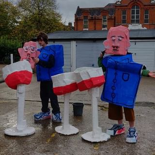

VENICE AGENDAS 2019: THE MARKET attempts to examine the financial mechanism that powers the art world. How does
the system of the art market work? Who are the beneficiaries and who are the losers? Initiating ideas with round
table discussions and commissions of new work, Venice Agendas intends to explore the impact of the art market on
the territory and environment that artists, institutions, curators and writers have to navigate to create, present
and discuss original contemporary artwork.
The VA19 project will continues in the UK with a series of discussions, events and artist commissions until
December 2019. We are delighted to announce that we are working with Islington Mill Art Academy, Salford. LUVA,
Bethnal Green, London. Invigilators Research Network, London, Artemotion, Bristol, HOP Projects, Folkestone and
MAD FOR REAL, International.
Venice Agendas 2019 is a workinprogress project supported and funded by DACS, Shape Arts, Creative Folkestone, The
Roger De Haan Charitable Trust, theartistsagency and funded with public money from the National Lottery through
Arts Council England.

Documentation of Venice Agendas And the Winner is...